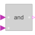
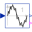

AndLogical 'and': y = u1 and u2 |

|
Information
This information is part of the Modelica Standard Library maintained by the Modelica Association.
The output is true if all inputs are true, otherwise the output is false.
Connectors (3)
| u1 |
Type: BooleanInput Description: Connector of first Boolean input signal |
|
|---|---|---|
| u2 |
Type: BooleanInput Description: Connector of second Boolean input signal |
|
| y |
Type: BooleanOutput Description: Connector of Boolean output signal |
Used in Examples (1)
|
Modelica.Blocks.Examples Demonstrates the usage of logical blocks |
Used in Components (5)
|  |
Modelica.Blocks.Math Output the total harmonic distortion (THD) |
|
Modelica.Electrical.PowerConverters.Interfaces.Enable Partial model providing enable parameter and optional enable input for one firing signal |
|
|
Modelica.Electrical.PowerConverters.Interfaces.Enable Partial model providing enable parameter and optional enable input for m firing signals |
|
|
Modelica.Electrical.PowerConverters.Interfaces.Enable Partial model providing enable parameter and optional enable input for two firing signals |
|
|
Modelica.Electrical.PowerConverters.Interfaces.Enable Partial model providing enable parameter and optional enable input for 2*m firing signals |